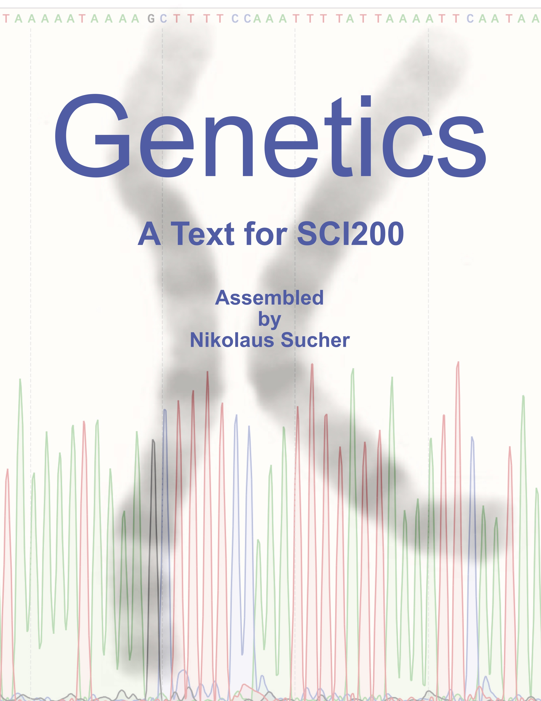
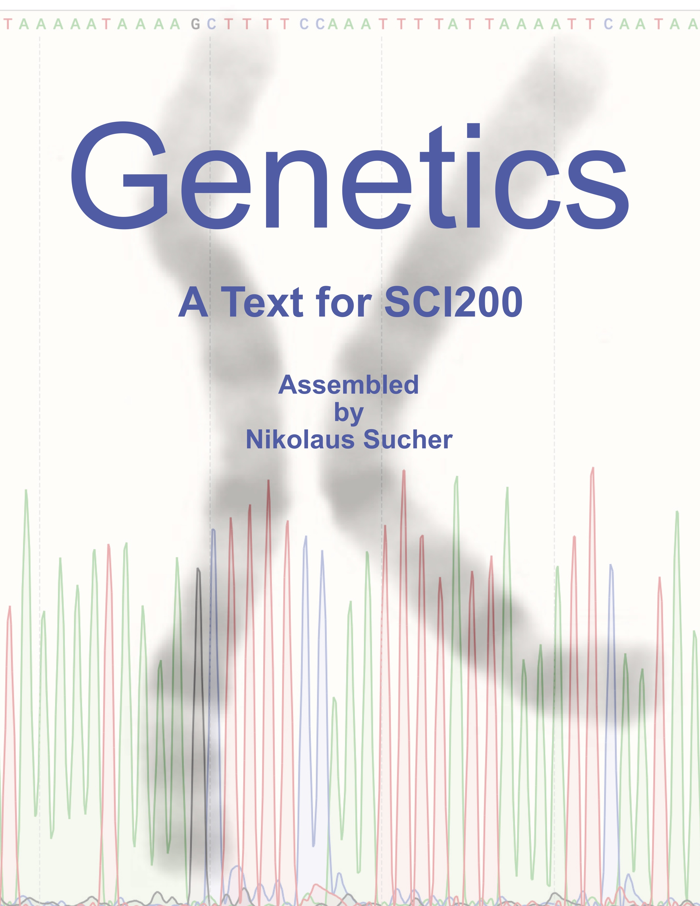

Text For Biology at Roxbury Community College
Welcome
This Is A Text For The Introductory Biology Courses (SCI103 And SCI104) at RCC.

This work is licensed under the Creative Commons Attribution-Share Alike 3.0 Unported United States License.
This Is A Text For The Introductory Biology Courses (SCI103 And SCI104) at RCC.

This work is licensed under the Creative Commons Attribution-Share Alike 3.0 Unported United States License.